HPC Slurm 클러스터 통합 관리 시스템 — 노드 관리, 작업 제출, 원격 데스크톱, CAE 시뮬레이션, 모니터링을 하나의 대시보드에서
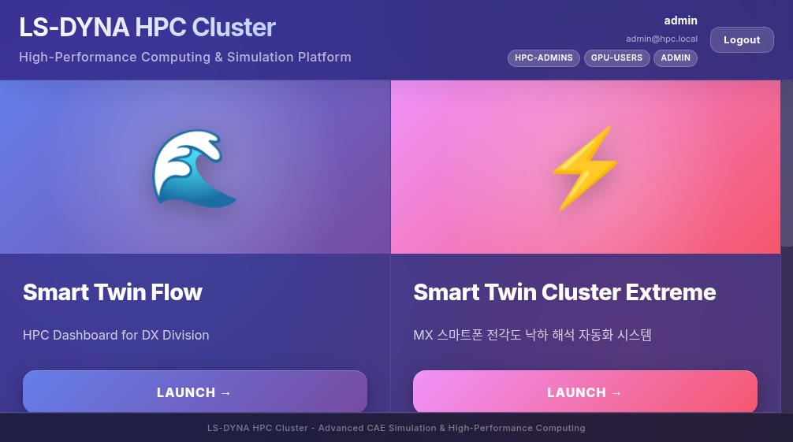
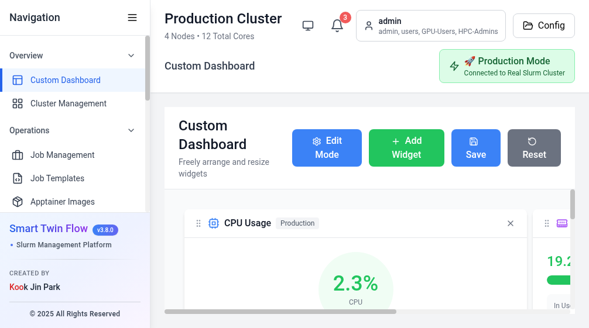
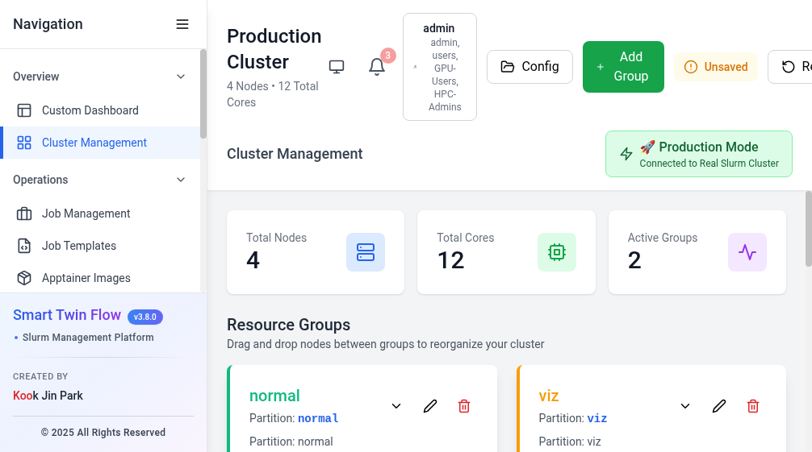
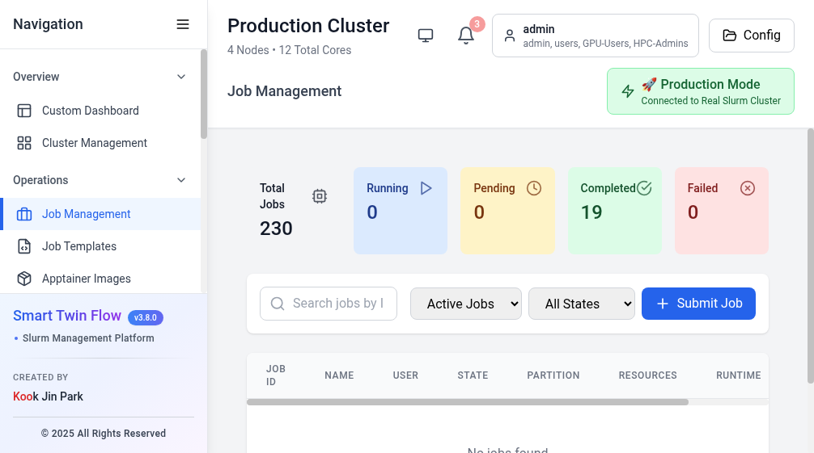
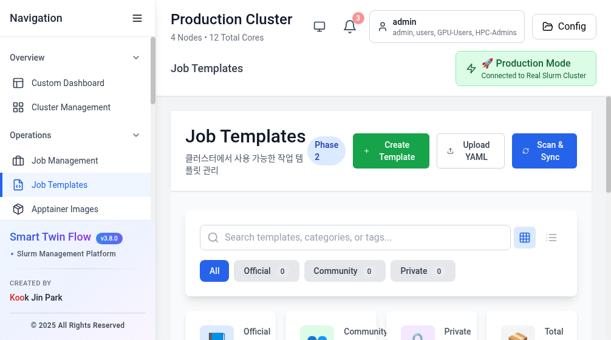
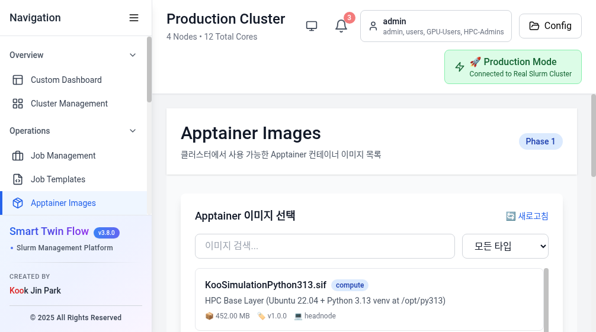
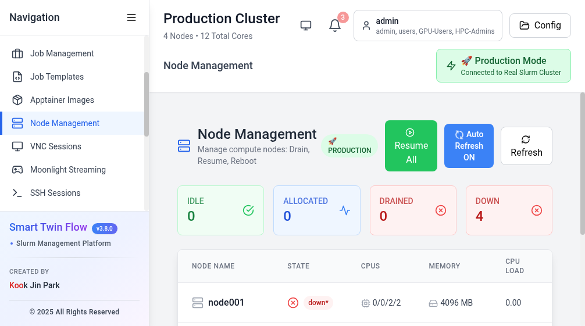
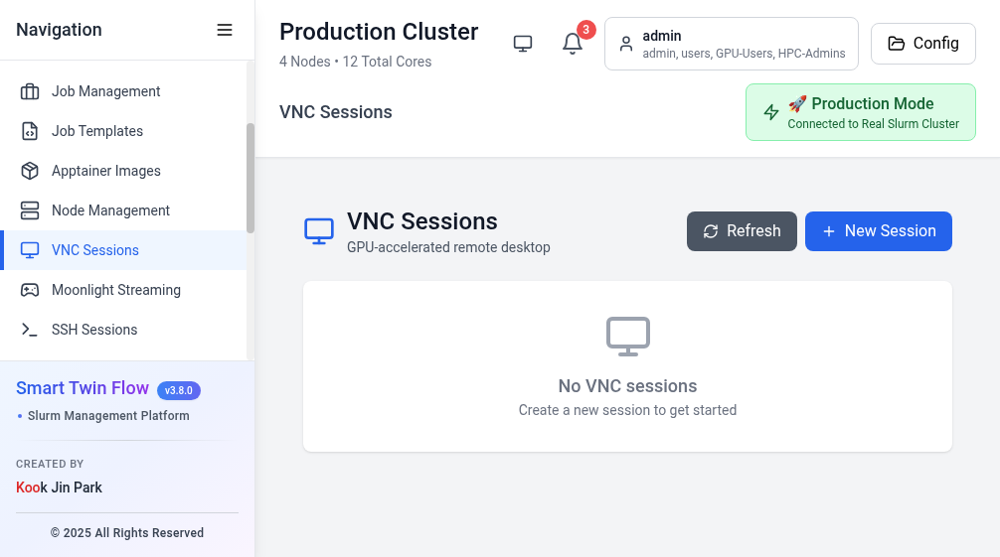
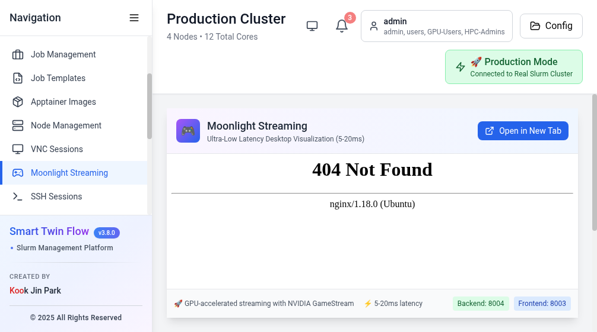
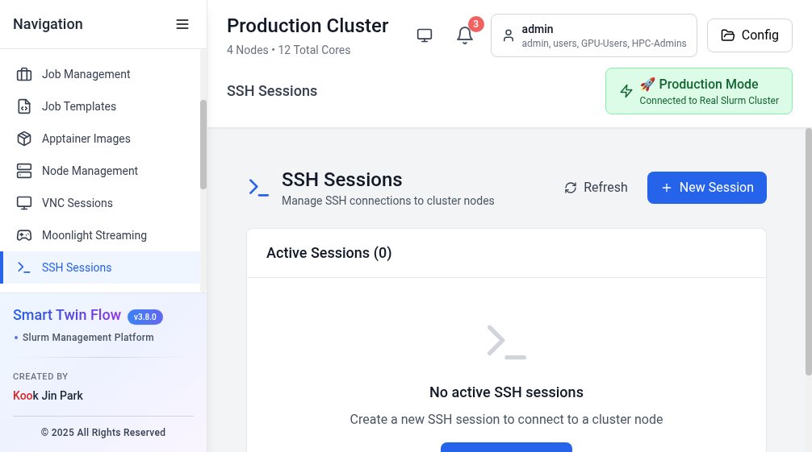
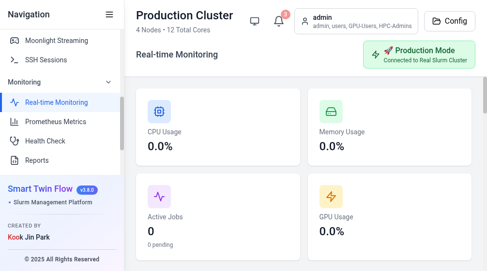
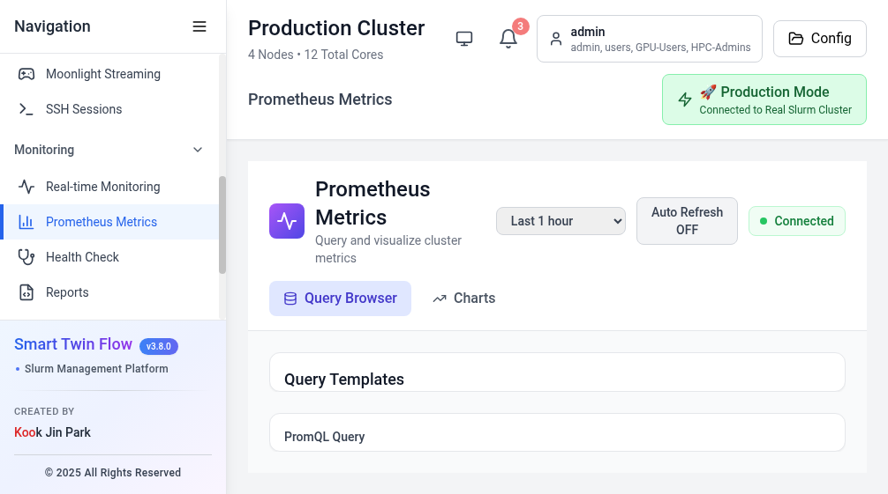
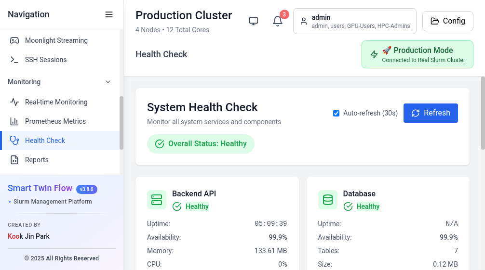
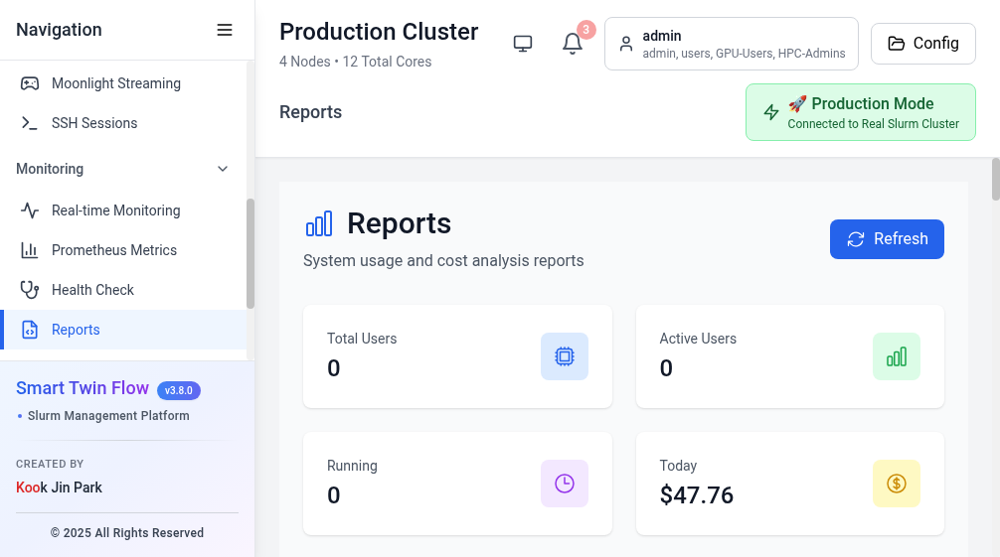
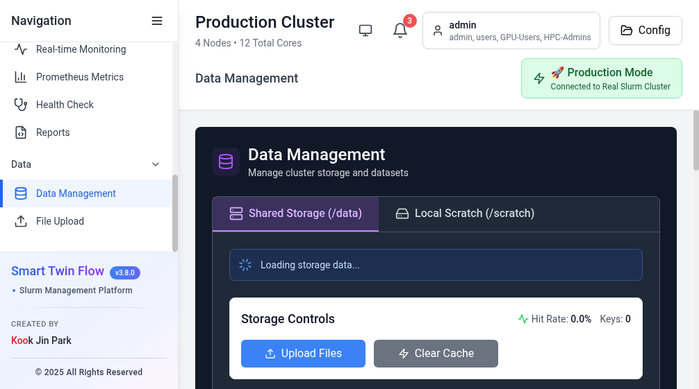
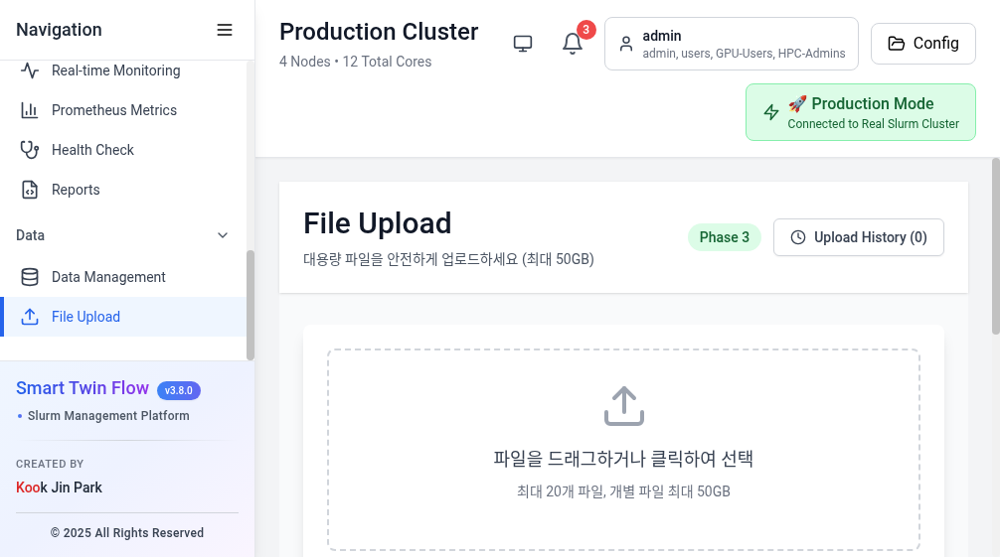
@jwt_required)@optional_jwt)@permission_required)| 메서드 | 엔드포인트 | 설명 | 권한 |
|---|---|---|---|
| GET | /api/health | 서비스 헬스 체크 (mode, status, timestamp) | 공개 |
| GET | /metrics | Prometheus 메트릭 스크랩 엔드포인트 | 공개 |
| GET | /api/slurm/status | 파티션 상태 목록 | 공개 |
| GET | /api/slurm/nodes/real | 노드 상세 정보 (IP, cores, mem, state) | 공개 |
| GET | /api/slurm/nodes/<hostname> | 특정 노드 상세 | 공개 |
| POST | /api/slurm/sync-nodes | 노드 상태 강제 동기화 | 공개 |
| GET | /api/slurm/jobs | 실행 중 작업 목록 | 공개 |
| POST | /api/slurm/jobs/submit | 작업 제출 | JWT + dashboard |
| POST | /api/slurm/jobs/<id>/cancel | 작업 취소 | JWT + dashboard |
| POST | /api/slurm/jobs/<id>/hold | 작업 홀드 | JWT + dashboard |
| POST | /api/slurm/jobs/<id>/release | 작업 재개 | JWT + dashboard |
| POST | /api/slurm/apply-config | Slurm 설정 적용 (scontrol reconfigure) | JWT + admin |
| GET | /api/slurm/qos | QoS 목록 | 공개 |
| GET | /api/jobs | 완료 포함 전체 작업 (sacct) | 공개 |
| GET | /api/storage/usage | 스토리지 사용량 (/home, /scratch, /data) | 공개 |
| GET | /api/storage/files | 파일 목록 | 공개 |
| GET | /api/storage/data/stats | 데이터 스토리지 통계 | 공개 |
| GET | /api/storage/data/datasets | 데이터셋 목록 | 공개 |
| GET | /api/storage/scratch/nodes | 노드별 스크래치 사용량 | 공개 |
| POST | /api/storage/scratch/move | 파일 이동 | 공개 |
| POST | /api/storage/scratch/delete | 파일 삭제 | 공개 |
| GET | /api/storage/search | 파일 검색 | 공개 |
| GET | /api/metrics/realtime | 실시간 메트릭 (WebSocket 피드용) | 공개 |
| GET | /api/auth/config | 인증 설정 반환 (SSO 모드 등) | 공개 |
| 3010 | 메인 대시보드 (React) |
| 4431 | 인증 포털 UI |
| 5173 | KooCAE Web |
| 5174 | App 프론트엔드 |
| 5010 | 메인 Flask 백엔드 |
| 4430 | 인증 백엔드 |
| 5000 | KooCAE 서버 |
| 5001 | KooCAE 자동화 서버 |
| 5011 | WebSocket 실시간 |
| 8001 | CAE 서비스 |
| 7000 | SAML IdP |
| 8002 | VNC 서비스 |
| 8003 | Moonlight Frontend / KasmVNC |
| 8004 | Moonlight/Sunshine 스트리밍 |
| 8005 | WebRTC NVENC |
| 9090 | Prometheus ✅ 실행 중 |
| 9100 | Node Exporter |